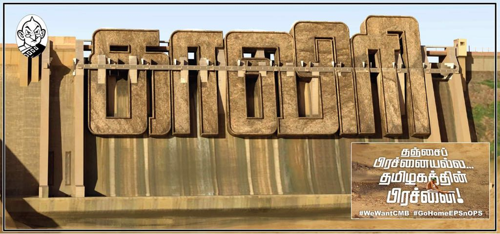

Select any one
Select any one
Select any one
Tweet
PuthiyathalaimuraiTV
News 18 TN
Thanthi TV
News7 Tamil
BBC Tamil
News Glitz
Tamil The Hindu
@sunnewstamil
@PTTVOnlineNews
@polimernews
@vijaytelevision
@allindiaradio
@DDNewsLive
@ndtv
@bbctamil
@cnni
Gulf News
AlJazeera English
@vikatan
Think Music India
Dhanya Rajendran (The News Minute)
Gokulam Tamil Radio
Kavitha Muralidharan (Marxist)
OneIndia Tamil
Tamil speakers
தமிழ் கீச்சர்கள்
MEMES
Eruma Saani
Jump Cuts
Madras Central
Madras Central Gopi Aravindh Raja
Memes Chennai
Put Chutney
Thamizhan memes
CauveryWMB Target handles
UN Human Rights
Nitin Gadkari
Uma Bharti
CM Office Tamilnadu
PM Office India
President of India
Narendra Modi
BJP Environment Minister
AIADMK Party
Stalin MK
United Nations
Politicians
ADMK
Dhanapal P
Dr Kamaraj K
Edappadi K Palaniswami
Hari Prabhakaran
Kadambur Raju
Kumaraguru
Mafoi K Pandiarajan
MAHENDRAN MA,MP.
Maitreyan
OPS
Public Releations TN
SathyaBama MP
Sengottaiyan KA
TTV Dhinakaran
Valarmathi S
Vellamandi Natarajan
Vellamandi Natarajan (Offl)
BJP
Narayanan Thirupathi
Narendra Modi
Narendra Modi PM
Ponnaarr BJP
Tamilisai Soundrajan
Vanathi Srinivasan
DMK
Anbil Mahesh
Arivalayam
Arulnithi Tamil
DMK4TN
JAnbazhagan
Kalaignar Karunanidhi
Kanimozhi DMK
KN Nehru
Sivasankar SS (Andimadam)
Stalin MK
TRB Rajaa
OTHERS
Makkal Pathai
Dr. Ramadoss
Seeman
Anbumani Ramadoss
Jothi Mani (Congress)
Vaiko MDMK
Vijayadharani
PERSONALITY
Indra Nooyi
Markandey Katju
ACTORS
A.R.Rahman
Abbas
Ajith Fans
Ajith Fans (massajith)
Ajith Fans(thalafansclub)
Ajith FC Trichy
Ajith kumar (Offcial)
Ajith_fc Suspended
Anirudh Ravichander
Arvind Swami
Arya
Ashok Selvan
Atlee
Dhanush
Diamond Babu
G.V.prakash
Gautami
Gautham Karthik
Hiphop Tamizha
Jai
Jayam Ravi
Jiiva
kalaaprabu
Kalaippuli S Thanu
Kamal Haasan
Karthi Actor
Karthick Naren
Lingusamy Director
Madhavan
Nayanthara
Pandiraj
Parthiepan
Prakash Raaj
Prasanna
Rajinikanth
Rajveer Singh
Ram Director
Rasamathi
Sarathkumar
Selvaraghavan Dir
Shruthi Hassan
Siddharth
Simbu Live
STR Simbu
Sudhanshu Pandey
Suriya Sivakumar
Trisha Krishnan
Vadivelu
Vijay (Official)
Vijay Fans (vijayfanspage)
Vijay Fans (vijayfansTN)
Vijay Fans (vijayfansupdate)
Vijay Sethupathi
Vikram Prabhu
Vishnu Vishal
Vivek actor
Tweet
Justice Delayed is Justice Denied. Farmers don't have chance of arrears for lost season! We Want Cauvery Management Board!!!
Water is a natural resource. Rivers are Nature's gift and is common for all!! Not a single drop of Cauvery is reaching ocean. Karnataka changed the course of Nature!
Government stops flow of water in Cauvery Delta region to making it a desert and to extract hydrocarbons, Methane. It's time to wake up #TN
You can't deny my right... We are not begging you... We are asking our Basic Rights on Cauvery Water... Stop political drama!!
Withdraw the Central govt's plea seeking clarification over the Cauvery issue and constitute forthwith the Cauvery Management Board to implement the Apex Court Order on it.
